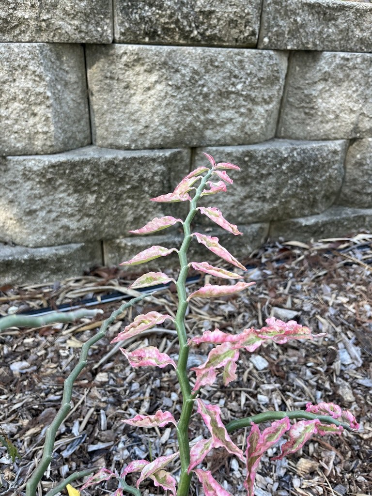

- This plant is the first clearly documented ring species in the plant kingdom — a phenomenon scientists thought existed only in animals. Two populations spread around the Caribbean from the Mexico-Guatemala border in opposite directions, and when they finally met in the Virgin Islands, they had diverged enough to behave as distinct forms.
- Like its holiday cousin the Poinsettia, what looks like a flower is actually a color-coded decoy: the vivid red 'slippers' are modified bracts, not petals. The tiny true flowers are hidden inside, and the whole structure is precision-engineered to deposit pollen on a hummingbird's head.
- The zigzag stems are not just for show — they are water tanks. In a drought, this plant switches to a nocturnal photosynthesis strategy (CAM), opening its pores only after dark to capture carbon dioxide without losing water to the Florida heat.
- European gardeners were growing this plant before 1688 — the first written record of it in cultivation is from a garden in Amsterdam, predating Linnaeus's formal scientific description by more than sixty years.
Euphorbia tithymaloides is native to a broad sweep of tropical and subtropical Americas — from southern Florida and the Caribbean through Mexico, Central America, and into northern South America. The Florida subspecies (subsp. smallii) is associated with coastal hammocks and rocky scrub in Miami-Dade County and the Keys.
The species has been in cultivation for a very long time. It was growing in a garden in Amsterdam before 1688 and spread widely through European horticulture during the colonial era. Today it is planted throughout the tropics as an ornamental hedge and accent shrub, and has naturalized on islands across the Pacific and Indian Oceans well outside its native range.
- Until 2003, this plant was classified in its own genus, Pedilanthus — a group long thought to be distinct from Euphorbia. A detailed taxonomic study by Steinmann that year submerged Pedilanthus entirely into Euphorbia, making devil's backbone officially a spurge. The reclassification is now standard, though the old name still turns up in older references and nursery tags.
- The flowers are not the showy red parts you notice first. Like its close relative the Poinsettia, what looks like a single flower is actually a cyathium — a cup holding clusters of tiny true flowers — wrapped inside a single shoe-shaped red bract. That bract is precisely adapted for hummingbird pollination, funneling a visitor's bill toward the nectar while dusting it with pollen.
- In 2012, researchers Cacho and Baum published a landmark study in the Proceedings of the Royal Society B demonstrating that Euphorbia tithymaloides is the first clearly documented ring species in the plant kingdom.
- The species radiated from a single ancestral population in the Mexico-Guatemala region around the Caribbean basin along two separate routes, eventually meeting in the Virgin Islands as forms that are morphologically and ecologically distinct — a pattern previously documented only among animals such as birds and salamanders.
- The plant has a long ethnobotanical history across its native range. Various cultures have used it medicinally — for skin conditions, as a purgative, and for respiratory complaints — though the caustic latex demands care in any such use. It has also been planted as a living fence and boundary hedge throughout the Caribbean, where it grows readily from cuttings stuck directly in the ground.
The tubular, shoe-shaped red bracts are a classic hummingbird flower — long, curved, and nectar-rich in a shape that suits a hovering bird better than a bee. In its native Caribbean range, hummingbirds are the primary pollinators, and ruby-throated hummingbirds passing through Florida are likely visitors where the plant is in bloom.
Beyond hummingbirds, the dense, succulent stems provide cover for small lizards and garden spiders, and the plant's structure makes it useful as a hedging shrub that shelters nesting birds. It does not serve as a larval host for any documented Florida butterfly or moth species, and visitors seeking the park's best butterfly habitat will find it among the native flowering plantings.
Propagates readily from stem cuttings — a single segment inserted in well-drained soil will typically root without treatment. The plant also sets seed, though cuttings are the standard method in cultivation. It spreads slowly by basal offsets over time.
Like its cousin the Poinsettia, what appears to be a single red flower is actually a cyathium: a cup-shaped structure holding clusters of tiny true flowers, enclosed within a single bright red, shoe-shaped bract (the 'slipper'). Bracts may be red, pink, or yellowish depending on the variety. Flowering occurs mainly in spring and summer but can continue year-round in warm weather.
A small, three-lobed capsule follows each cyathium. Capsules are not ornamentally significant and are seldom noticed. Seeds are dispersed when the capsule dries and splits.
The stems are the defining feature: thick, fleshy, and growing in a tight zigzag, with each segment angling sharply from the previous one. Leaves are oval to elliptic, soft, and arranged alternately along the ridged inner curve of each segment. Many cultivated forms have variegated leaves edged in white or pink.
All parts exude a thick milky sap when cut or broken — handle with care and avoid skin or eye contact.
The zigzag stems are unmistakable — no other common Florida landscape plant has this growth habit. Look along the inner curve of each stem segment for the leaves, arranged neatly in the elbow of each bend. At the stem tips, watch for the small red slipper-shaped bracts when the plant is in bloom.
If you see any broken or cut stem, you may notice thick white latex — a hallmark of the entire Euphorbia family, and a reminder to look but not handle.
The milky white sap is a serious hazard: it is caustic and can cause blistering and deep chemical burns on skin, and contact with the eyes can cause severe inflammation — in some cases, temporary or permanent vision damage. Gloves and eye protection are strongly recommended whenever pruning or handling broken stems.
The ASPCA classifies the plant as toxic to dogs, cats, and horses; ingestion causes immediate burning in the mouth, and in larger amounts can cause vomiting, diarrhea, and more serious effects. Do not eat any part of this plant. If sap contacts your eyes or a pet ingests any part of it, seek medical or veterinary attention promptly.
The Florida subspecies, subsp. smallii, was first described from a Miami specimen collected in 1904 and was long recognized as a distinct entity. Flora of North America notes that fieldwork suggests wild Florida populations may be largely extirpated (locally extinct in the wild in Florida); most plants encountered in Florida today are cultivated.
Visitors seeing this plant at the park are likely looking at a cultivated selection rather than a genetically wild Florida individual.
The name 'Redbird Cactus' tells a small story on its own: the plant is not a cactus at all, but the bright red slipper-shaped bracts clustered along green stems reminded people of little red birds perched in a row. The name stuck even though the plant is a spurge through and through.
The zigzag stems are not just structural curiosity — they are water-storage organs. In dry spells the plant can switch to CAM (Crassulacean acid metabolism) photosynthesis, opening its pores only at night to take in carbon dioxide, dramatically cutting water loss during the hottest part of the day.
Numerous cultivated varieties exist, differing mainly in leaf variegation — plain green, white-edged, and pink-tinged forms are all common in the nursery trade. All share the same zigzag stem structure and sap hazard regardless of leaf color.
Its near-indestructibility made it a favorite in historic Florida yards: it grows from a snapped stem pressed into the ground, thrives in salty and rocky coastal soils where other shrubs fail, and asks almost nothing of the gardener once established.


- © elurding (CC-BY-NC), via iNaturalist
- © Ruby Meador (CC-BY-NC), via iNaturalist
- © Denise Sosa (CC-BY-NC), via iNaturalist